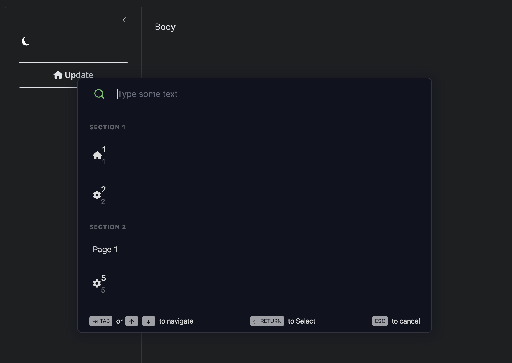
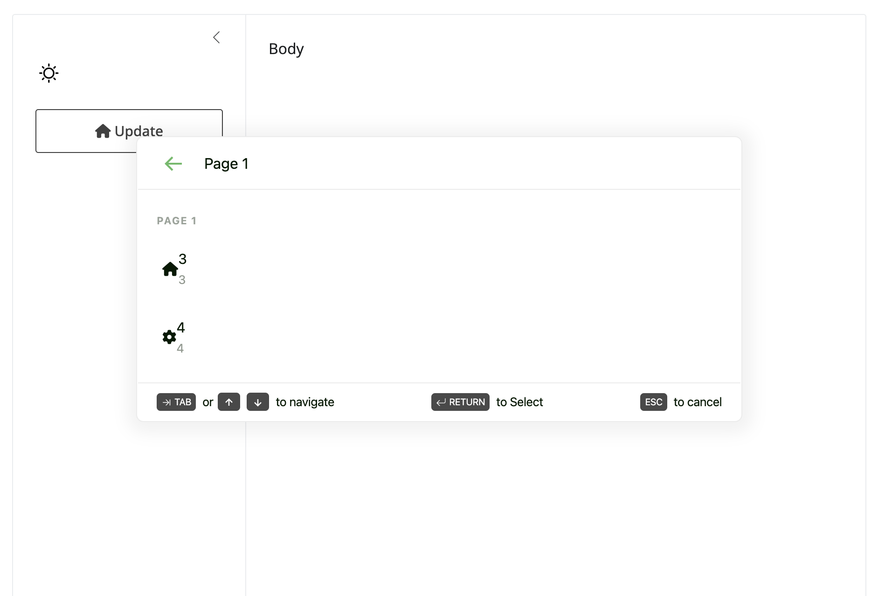

The goal of {scoutbaR} is to provide an R API to the scoutbar React widget.

Installation
You can install the development version of {scoutbaR} from GitHub with:
# install.packages("devtools")
devtools::install_github("cynkra/scoutbaR")Example
{scoutbaR} is easy to use. The app below shows how to leverage scout_action(), scout_section() and scout_page():
library(scoutbaR)
library(shiny)
library(bslib)
ui <- page_fillable(
title = "Penguins dashboard",
layout_sidebar(
sidebar = sidebar(
input_dark_mode(id = "theme"),
actionButton("update", "Update", icon = icon("house")),
scoutbar(
"scoutbar",
actions = list(
scout_section(
label = "Section 1",
scout_action(
id = 1,
icon = "house",
label = "1",
description = "1"
),
scout_action(
id = 2,
icon = "gear",
label = "2",
description = "2"
)
),
scout_section(
label = "Section 2",
scout_page(
label = "Page 1",
scout_action(
id = 3,
icon = "house",
label = "3",
description = "3"
),
scout_action(
id = 4,
icon = "gear",
label = "4",
description = "4"
)
),
scout_action(
id = 5,
icon = "gear",
label = "5",
description = "5"
)
)
)
),
textOutput("textOutput"),
textOutput("current_tab")
),
"Body"
)
)
server <- function(input, output, session) {
observeEvent(input$update, {
update_scoutbar(session, "scoutbar", revealScoutbar = TRUE)
})
observeEvent(input$theme, {
update_scoutbar(session, "scoutbar", theme = input$theme)
})
output$textOutput <- renderText({
sprintf("You entered: %s", input$scoutbar)
})
}
shinyApp(ui, server)